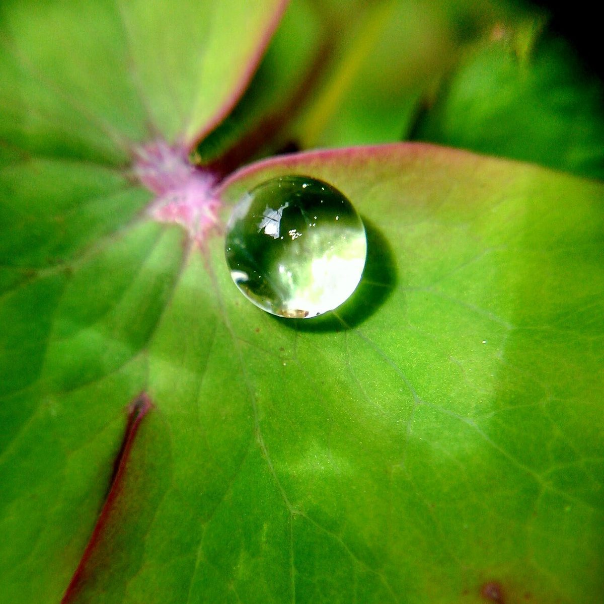
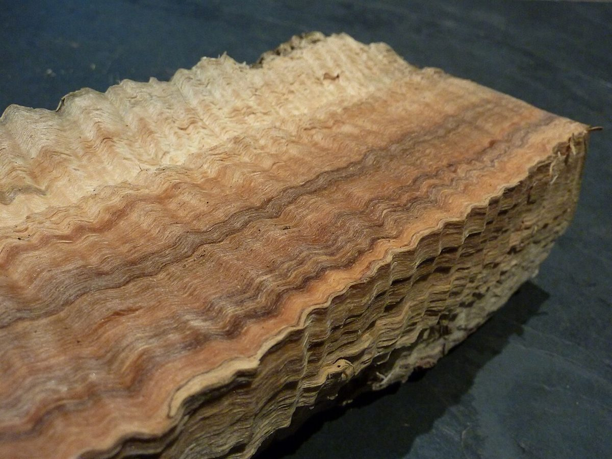
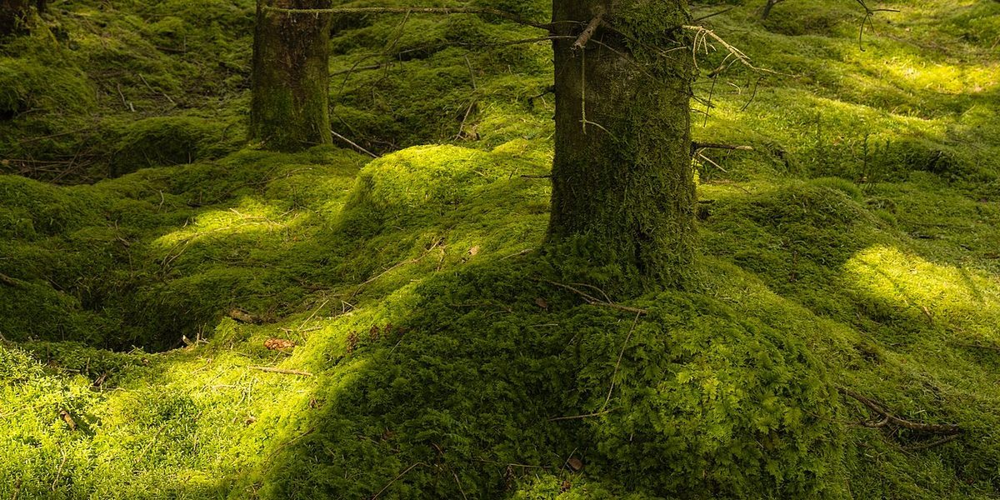
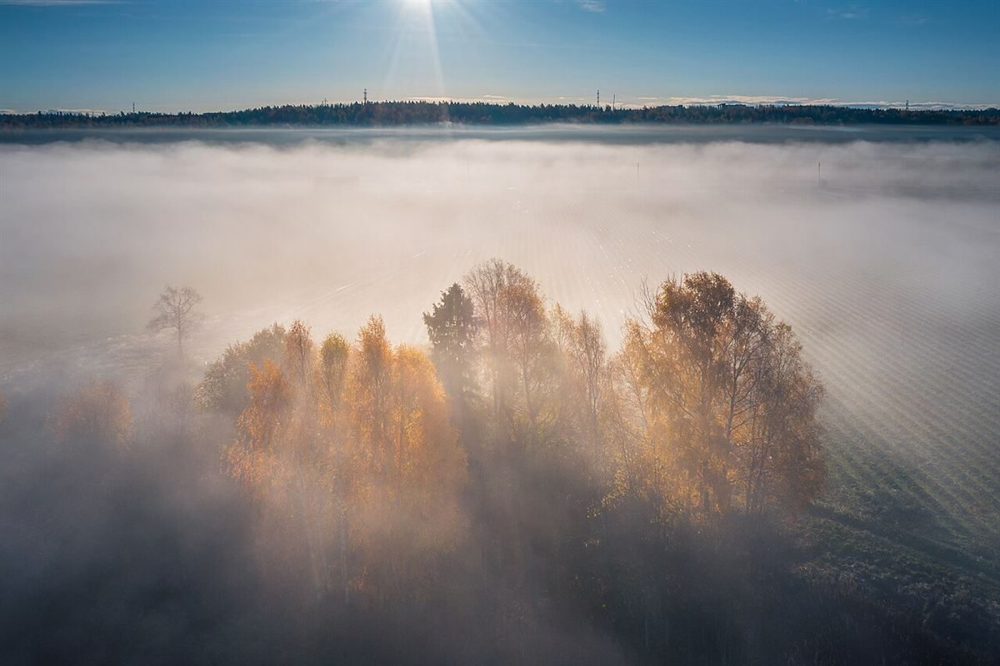

Café / 福島県会津若松市
rainy wood のサンプルページです。降った雨が木の上で分かれていく三つの道筋になぞらえて、ページを「降る・伝う・滴る・沁みる・着く」の順に並べました。
Instagramをのぞく所在地を見る
この見立ては制作側の連想で、お店の理念・由来とは無関係です。

葉の上でいちど止まり、ひと粒になる道。口コミのページへ
つながって、葉先から一滴ずつ離れていく道。メニューのページへ

木目に沿って、根もとまで降りていく道。お店のページへ

